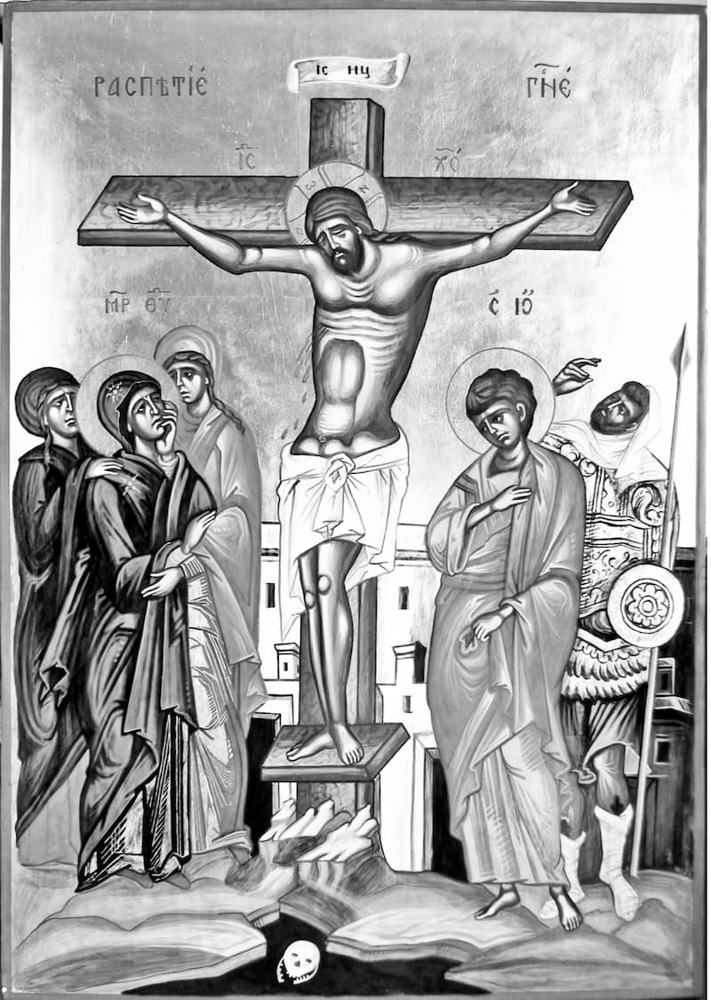

ÎNTÎIA VESTIRE A LUI HRISTOS CĂTRE UCENICI PENTRU MOARTEA ȘI ÎNVIEREA SA
„Și a început să-i învețe că Fiul Omului trebuie să pătimească multe și să fie defăimat de bătrîni, de arhierei și de cărturari; și să fie omorît, iar după trei zile să învieze. Și zicea acest cuvînt pe față. Și, luîndu-L de o parte, Petru a început să-L dojenească. Dar El, întorcîndu-Se și uitîndu-Se la ucenicii Săi, l-a certat pe Petru și i-a zis: «Mergi înapoia mea, satano! Căci tu nu cugeți cele ale lui Dumnezeu, ci cele ale oamenilor»” (Marcu 8:31-33).
După ce mărturisiseră că El este adevăratul Hristos, atunci le arată ucenicilor și taina crucii. Dar nu cu totul descoperit, căci nici așa nu pricepeau ei ce zicea Domnul, nici nu înțelegeau ce este aceea „a învia”, ci doar atît socoteau: că e mai bine să nu pătimească El nicidecum. De aceea Îl și dojenește Petru: pentru că, fiind cu putință să nu pătimească nimic, El Se arunca pe Sine în moarte. Iar Domnul – arătînd că patima Lui se va face pentru mîntuirea noastră și că singur Satana nu voiește ca El să pătimească, pentru a nu-i mîntui pe oameni – îl numește pe Petru „satană”, ca pe cel ce cugeta cele cugetate și de Satana. Și Domnul îl numește așa și pentru că Petru nu voia ca El să pătimească, ci era împotrivitor Lui, căci „satana” se tîlcuiește „potrivnic”. Și zice: „Mergi înapoia Mea!”, adică: Urmează voii Mele și nu te împotrivi, nici să stai împotriva Mea, ci urmează pe urma Mea! Și Domnul zice că Petru cugetă „cele ale oamenilor” pentru că, cugetînd unele smerite și trupești, voia ca Domnul să fie în odihnă și să nu Se răstignească, nici să cadă în ispite pentru mîntuirea oamenilor.
„Și, chemînd la Sine mulțimea împreună cu ucenicii Săi, le-a zis: «Oricine voiește să vină după Mine să se lepede de sine, să-și ia crucea și să-Mi urmeze Mie. Căci cine va voi să-și scape sufletul îl va pierde, iar cine își va pierde sufletul pentru Mine și pentru evanghelie, acela îl va scăpa. Căci ce-i folosește omului să cîștige lumea întreagă, dacă-și pierde sufletul? Sau ce ar putea să dea omul în schimb pentru sufletul său?»” (Marcu 8:34-37).
De vreme ce Petru Îl dojenise pentru că avea să Se răstignească, Domnul cheamă mulțimea și zice în auzul tuturor, îndreptînd cuvîntul mai mult către Petru: O Petre! – tu Mă dojenești că aleg crucea, iar Eu îți zic că nimeni nu se va mîntui dacă nu va muri pentru lucrul cel bun și pentru adevăr. Și vezi că Domnul nu a zis: „măcar de nu ar voi cineva, trebuie să moară”, ci: „oricine voiește”. Căci zice: Nu silesc pe nimeni, căci chem la lucruri bune, nu la rele, ca să-l silesc. Pentru aceasta, dacă cineva nu voiește, nici nu este vrednic de acestea.
Iar ce este „a te lepăda de sine” în acest chip, am fi învățat dacă am fi cunoscut ce este a te lepăda de altul, atunci cînd cel ce se leapădă – de frate poate, sau de slugă sau de tată, măcar în cazne sau omorît fiind acela – nu se întoarce, nu este împreună-pătimitor, ca unul ce s-a înstrăinat. Deci întru acest chip voiește și Domnul să nu ne fie milă de trupul nostru – măcar de ar fi bătut, măcar oricîte ar pătimi – ci fiecare „să-și ia crucea”, adică moartea cea de ocară, căci crucea părea atunci a fi de ocară. Dar, fiindcă mulți se răstignesc fiindcă sînt tîlhari și ucigași, adaugă că, împreună cu răstignirea, se cuvine să aibă și toată fapta bună, căci aceasta este „și să-Mi urmeze Mie”. Și – fiindcă această poruncă, adică a se da pe sine omul la moarte, pare a fi grea și fără de milă – Domnul arată că porunca luării crucii este cu prisosință un lucru al iubirii de oameni. Căci – zice – cel ce își pierde sufletul – însă pentru Mine, nu fiind omorît ca un tîlhar sau sugrumîndu-se pe sine, căci aceasta nu este pentru Mine – unul ca acesta „își va afla sufletul său”, adică se va mîntui. Așa cum, tot la fel, cel căruia i se pare că și-a dobîndit sufletul îl va pierde dacă în vremea muceniciei nu va sta împotrivă, răbdînd. Fiindcă să nu-mi zici mie că a dobîndit viața, căci, dacă împreună cu aceasta vei adăuga că a dobîndit și toată lumea, nici un folos nu are. Fiindcă este oare cu putință a răscumpăra mîntuirea cu bani? Căci, dacă aceasta ar fi fost cu putință, cel care a dobîndit lumea dar și-a pierdut sufletul ar fi dat mulțime de bani ca să se afle nevinovat atunci cînd se frige ca în tigaie în para focului veșnic. Însă nu e cu putință a se face acolo un asemenea schimb. Deci, dintru unele ca acestea, vom astupa gurile ereticilor care urmează socotelii lui Orighen și care zic că sufletele vor veni iarăși la starea cea dintîi, după ce se vor munci după măsura păcatelor1. Deci să audă ei că nu este cu putință a da ceva în schimb pentru suflet și că nu este cu putință nici a se potrivi caznele pe măsura păcatelor.
„Căci de cel ce se va rușina de Mine și de cuvintele Mele în neamul acesta desfrînat și păcătos, și Fiul Omului Se va rușina de el cînd va veni întru slava Tatălui Său cu sfinții îngeri” (Marcu 8:38). „Și le zicea lor: «Adevărat grăiesc vouă că sînt unii din cei ce stau aici care nu vor gusta moartea pînă ce nu vor vedea împărăția lui Dumnezeu venind întru putere»” (Marcu 9:1)
Nu este de ajuns credința cea din minte, ci Domnul cere și mărturisirea prin cuvînt. De vreme ce omul este îndoit, îndoită facă-se și sfințirea! – sfințindu-se sufletul prin credință, iar trupul prin mărturisire. Deci – de cel ce se va rușina a mărturisi că Cel răstignit este Dumnezeu al său – de acesta Se va rușina și El, judecîndu-l slugă nevrednică a Sa cînd va veni din nou, dar nu smerit, nici nebăgat în seamă – precum S-a arătat acum, așa încît unii să se rușineze de El – ci întru slavă și înconjurat de sfinții îngeri.
Și, vorbind despre slava Sa, ca să arate că nu le spune acestea în deșert, zice: Sînt unii dintre cei ce stau de față – adică Petru, Iacov și Ioan – care nu vor muri pînă cînd nu le voi arăta, întru schimbarea Mea la față, în ce fel de slavă voi veni la a doua venire. Căci nimic altceva n-a fost schimbarea la față decît mai înainte vestire a venirii celei de-a doua, fiindcă întru acest chip va străluci și El Însuși, dar și drepții.
A DOUA VESTIRE A LUI HRISTOS CĂTRE UCENICI PENTRU MOARTEA ȘI ÎNVIEREA SA
„Și, ieșind ei de acolo, străbăteau Galileea, dar El nu voia să știe cineva. Căci îi învăța pe ucenicii Săi și le zicea că Fiul Omului Se va da în mîinile oamenilor și-L vor ucide, iar după ce-L vor ucide, a treia zi va învia. Ei însă nu înțelegeau cuvîntul și se temeau să-L întrebe” (Marcu 9:30-32).
La facerile de minuni aduce pretutindeni și cuvîntul despre patima Sa, ca să nu fie socotit că a pătimit din pricina neputinței. Deci – după ce a zis-o pe cea de întristare, că-L vor omorî adică – o adaugă și pe cea de bucurie, că va învia a treia zi, ca să ne învățăm că după cele de întristare urmează pururea cele de bucurie și ca să nu ne întristăm în deșert pentru cele de mîhnire, ci să nădăjduim spre cele mai bune.
A TREIA VESTIRE A LUI HRISTOS CĂTRE UCENICI PENTRU MOARTEA ȘI ÎNVIEREA SA
„Și erau pe drum, suindu-se la Ierusalim, iar Iisus mergea înaintea lor. Și ei erau uimiți, și cei ce mergeau după El se temeau. Și, luînd la Sine iarăși pe cei doisprezece, a început să le zică ce avea să I se întîmple: «Căci iată ne suim la Ierusalim; și Fiul Omului va fi dat arhiereilor și cărturarilor, și-L vor osîndi la moarte și-L vor da în mîna păgînilor. Și-L vor batjocori, și-L vor scuipa, și-L vor biciui și-L vor omorî; dar după trei zile va învia»” (Marcu 10:32-34).
De ce le spune dinainte cele ce I Se vor întîmpla? Ca să gătească dinainte mintea ucenicilor, încît aceștia, mai înainte auzindu-le, să le sufere mai cu lesnire, și să nu se înspăimînte de întîmplarea cea fără de veste și să cunoască ei că El pătimește de bună voie. Căci este arătat că Cel ce a știut mai înainte și putea să fugă, dar n-a fugit, Se dă pe Sine la patimă de bună voie. Și, luîndu-i pe ucenici de-o parte, le spune numai lor; pentru că, taină fiind patima, se cuvenea să le fie descoperită celor mai de aproape. Pentru aceasta merge înaintea tuturor, vrînd să-i despartă pe ucenicii Săi de mulțime. Prin aceasta, că merge înaintea tuturor și îi întrece în cale, mai arată și că aleargă la patimă și că nu fuge de moartea cea pentru mîntuirea noastră. Și, măcar că le povestește pe toate cele întristătoare, totuși mîngîierea acestora este că „după trei zile va învia”.
UNGEREA DIN BETANIA. CINA CEA DE TAINĂ. GHETSIMANI. PRINDEREA. ÎNFĂȚIȘAREA LA CAIAFA. LEPĂDAREA LUI PETRU.
„Și după două zile erau Paștile și Azimile. Și arhiereii și cărturarii căutau cum să-L prindă cu vicleșug, ca să-L omoare.
Dar ziceau: «Nu la sărbătoare, ca să nu fie tulburare în popor!»
Și – fiind El în Betania, în casa lui Simon leprosul, și șezînd la masă – a venit o femeie avînd un alabastru cu mir de nard curat, de mare preț.2 Și, spărgînd vasul, a vărsat mirul pe capul lui Iisus.
Dar erau unii mîhniți între ei3, zicînd: «Pentru ce s-a făcut această risipă de mir? Căci acest mir putea să se vîndă cu peste trei sute de dinari, și să se dea săracilor!» Și cîrteau împotriva ei4” (Marcu 14:1-5).
Soborul s-a adunat și a ținut sfat miercuri, și pentru aceasta postim și noi miercurile. Deci aceia voiau să treacă vremea praznicului, dar n-au fost îngăduiți de Hristos. Ci, purtînd El Însuși grijă de vremea patimii Sale, la Paști a binevoit a Se răstigni, pentru că El Însuși era Paștile cele adevărate. Drept aceea, ni se cuvine a ne minuna de puterea Lui: căci, atunci cînd voiau să-L prindă pe Dînsul, aceia n-au putut; iar cînd nu voiau ei, din pricina praznicului, atunci S-a dat pe Sine lor de bunăvoie.
„Și – fiind El în Betania, în casa lui Simon leprosul, și șezînd la masă – a venit o femeie…” Toți cei patru Evangheliști fac pomenire de mir (Matei 26:7, Luca 7:37, Ioan 11:2), și unora li se pare că una singură este femeia cu mirul. Dar nu este așa, ci sînt două, și anume: una cea de la Ioan, care îi era soră lui Lazăr, iar alta cea pomenită de ceilalți trei Evangheliști. Însă, dacă vei lua aminte, vei vedea că aceste femei sînt trei: la Ioan una, la Luca alta și la ceilalți doi alta. Iar zisa din urmă se adeverește prin aceea că femeia de la Luca era desfrînată și a venit la Hristos pe la mijlocul propovăduirii, iar cea de la Matei a venit aproape de vremea patimii, și nu se mărturisește că ar fi fost desfrînată.
Și Domnul primește rîvna femeii care a adus alabastrul cu mir pentru că ea cheltuise atît de mult pentru nard. Iar prin „nard de credință” se cuvine a înțelege fie că așa era numit un fel de nard, fie că aici este arătat nardul cel curat, neamestecat, întocmit cu adeverire și de credință.
Și „erau unii mîhniți între ei”. Iar Ioan zice că [doar] Iuda s-a mîniat, dar se poate ca și ceilalți apostoli să o fi defăimat pe femeie, fiindcă pururea Îl auzeau pe Hristos învățînd pentru milostenie. Dar Iuda nu s-a mîniat asupra femeii cu aceeași socoteală, ci din pricina iubirii de argint și dintru urîciunea cîștigării argintului. Pentru aceasta și face Ioan pomenire numai de el (Ioan 12:4-6), ca de unul ce a defăimat-o pe acea femeie cu socoteală vicleană. „Și se răsteau împotriva ei”, adică se mîniau, o ocărau, o mustrau pe ea.
„Dar Iisus a zis: «Lăsați-o! De ce îi faceți supărare? Lucru bun a făcut ea cu Mine. Căci pe săraci îi aveți totdeauna cu voi și puteți să le faceți bine oricînd voiți, dar pe Mine nu Mă aveți totdeauna. Ea a făcut ceea ce avea de făcut: a uns mai dinainte trupul Meu spre înmormîntare. Adevărat zic vouă: oriunde se va propovădui evanghelia, în toată lumea se va spune și ce a făcut aceasta, spre pomenirea ei»” (Marcu 14:6-9).
Domnul îi mustră pe Apostoli fiindcă împiedicau osîrdia femeii fără de vreme, zicînd El: De ce îi faceți ei supărare după ce a adus darul, întorcînd-o pe dînsa înapoi prin înfruntare? Apoi, Hristos îl îmboldește și pe Iuda vînzătorul, atunci cînd zice: „A făcut acest lucru spre îngroparea Mea.” Și îl mustră ca pe un neînțelegător, ca și cum i-ar fi zis: Dîndu-mă pe Mine la moarte, tu nu ești mustrat de cugetul tău; iar această femeie, aducînd mirul spre îngroparea Mea îndemnată ca de Dumnezeu, oare se cuvine să fie mustrată de tine? Și aici Domnul face două proorocii: că evanghelia se va propovădui în toată lumea, și că fapta cea bună a femeii se va vesti împreună cu evanghelia Sa.

Drept aceea, să se rușineze de aici cei ce îi cinstesc mai mult pe săraci decît pe Hristos, căci am auzit și eu pe oarecari argintari zicînd: „Dacă, stricînd un vas sfințit, voi da săracilor și voi trăi și eu, nu este osîndă.” Să audă dar aceia cum Hristos alege mai mult a Sa cinste decît pe săraci!5 Căci Trupul lui Hristos este cel ce se află cu adevărat pe discul de aur și cu adevărat Sîngele Lui cel din potir. Deci, acela care ia discul de mult preț și silește să se pună Trupul lui Hristos într-unul mai prost, aducîndu-i ca pricină pe săraci, să cunoască de aici al cui părtaș se face!
„Iar Iuda Iscarioteanul, unul din cei doisprezece, s-a dus la arhierei ca să li-L dea pe Iisus. Și, auzind, ei s-au bucurat și au făgăduit să-i dea bani. Și el căuta cum să-L dea lor la timp potrivit” (Marcu 14:9-11).
Cînd femeia își arată a sa osîrdie și dragoste, atunci turbează ucenicul, cel care este „unul din cei doisprezece”. Și nu fără socoteală este scris „unul din cei doisprezece”, ci ca să se arate că și Iuda a fost ales a fi unul din cei de frunte. Dar ce este aceasta: „să-L dea lor”? Adică să le vestească cînd va fi Hristos singur, căci ei se temeau să năvălească asupra Lui cînd învăța, din pricina norodului. Iar Iuda le-a făgăduit arhiereilor să-L dea lor cînd Domnul va fi singur.
„Iar în ziua cea dintîi a Azimilor, cînd jertfeau Paștile, ucenicii Lui L-au întrebat: «Unde voiești să gătim ca să mănînci Paștile?» Și a trimis doi din ucenicii Lui, zicîndu-le: «Mergeți în cetate, și vă va întîmpina un om ducînd un urcior cu apă; mergeți după el! Și, unde va intra, spuneți stăpînului casei că Învățătorul zice: Unde este odaia în care să mănînc Paștile împreună cu ucenicii Mei? Iar el vă va arăta un foișor înalt așternut gata. Acolo să gătiți pentru noi»” (Marcu 14:12-l5).
„Ziua cea dintîi a Azimelor” este numită ziua de joi, care era mai înainte de Azime, pentru că azimele se mîncau vineri. Deci ucenicii au venit la Dînsul și L-au întrebat unde vor mînca Paștile. Iar dintru aceasta se arată că Hristos nu avea un locaș osebit al Său și că nici ucenicii nu aveau case; căci, dacă ar fi avut, L-ar fi luat pe El împreună cu ei acolo. Și a trimis pe doi dintre ucenicii Săi – pe Petru și pe Ioan, precum zice Luca (Luca 22:8-11) – către un om neștiut, arătîndu-le că ar fi putut să nu pătimească. Fiindcă Cel ce a plecat cugetul omului neștiut ca să-L primească pe Dînsul, ce nu ar fi făcut cu alții, dacă ar fi voit? Și le dă lor și un semn pentru a afla casa: să meargă după omul care duce un vas cu apă. Lucru care, după înalta înțelegere, se tîlcuiește așa: „urcior cu apă” poartă cel ce s-a botezat; și el merge în „casă”, adică în starea cea cuvenită celor cuvîntători [raționali], pentru că acela care are Botezul merge întru odihnă, viețuind cu cuvînt, odihnindu-se în starea aceasta ca într-o casă. Iar „stăpîn al casei” este mintea, care arată „foișor înalt”, adică înălțimea înțelegerilor ei. Dar foișorul acesta este și „așternut”; și, măcar că este înalt, nu are nimic aspru și mîndru, fiindcă este așternut și netezit de smerenie. Deci acolo, întru o minte ca aceasta, se gătesc lui Hristos Paștile de către doi ucenici – Petru și Ioan, anume de către lucrare și de către vederea cea duhovnicească – pentru că Petru, fierbinte fiind în credință, este lucrător; iar Ioan, văzător ca un teolog6.
„Și au ieșit ucenicii, și au venit în cetate și au găsit așa precum le-a spus; și au gătit Paștile. Iar făcîndu-se seară, a venit cu cei doisprezece. Pe cînd ședeau la masă și mîncau, Iisus a zis: «Adevărat grăiesc vouă că unul dintre voi, care mănîncă împreună cu Mine, Mă va vinde.» Ei au început să se întristeze și să-I zică, unul cîte unul: «Nu cumva sînt eu?» Iar El le-a zis: «Unul dintre cei doisprezece, care întinge cu Mine în blid. Căci Fiul Omului merge precum este scris despre El; dar vai de omul acela prin care este vîndut Fiul Omului! Bine era de omul acela dacă nu s-ar fi născut!»” (Marcu 14:16-21).
Cum de au șezut, de vreme ce Legea poruncea ca să mănînce Paștile stînd în picioare? (Ieșire 12:11) Urmează de aici că mai întîi au săvîrșit cele ale Legii, apoi au șezut, vrînd Hristos să dea Paștile Sale. Și au început a se întrista ucenicii pentru cuvîntul Domnului prin care a zis: „Unul dintre voi, care mănîncă împreună cu Mine, Mă va vinde.” Căci, măcar că ei erau afară de patima aceasta, totuși se temeau, crezînd lui Dumnezeu, Celui care știe inimile, mai mult decît lor înșile. Vezi și cuvîntul acesta, „merge”, căci moartea Îi era lui Hristos ca o călătorie, iar nu moarte. Iar „bine era de omul acela dacă nu s-ar fi născut” s-a zis pentru munca pe care avea să o pătimească Iuda vînzătorul, căci mai bine i-ar fi fost dacă nu s-ar fi născut decît să se fi născut spre cazne. Deci chiar din sfîrșitul lucrului se vede că mai bine ar fi fost dacă Iuda n-ar fi fost nicidecum, căci Dumnezeu l-a făcut pe el spre lucruri bune; dar, de vreme ce el a căzut întru o atît de mare răutate, se pare că mai bine era de nu s-ar fi născut nicidecum.
„Și, mîncînd ei, Iisus a luat pîine și, binecuvîntînd, a frînt și le-a dat lor. Și a zis: «Luați, mîncați, acesta este Trupul Meu.» Și – luînd paharul, mulțumind, le-a dat și au băut din el toți. Și a zis lor: «Acesta este Sîngele Meu, al legii celei noi, care pentru mulți se varsă. Adevărat grăiesc vouă că de acum nu voi mai bea din rodul viței pînă în ziua aceea cînd îl voi bea nou în împărăția lui Dumnezeu!»” (Marcu 14:22-25).
Unii zic că Iuda nu s-a împărtășit cu Tainele, ci a ieșit mai înainte de a da Domnul Tainele; iar alții zic că Hristos i-a dat din Cele Sfinte și lui, nemulțumitorului.
Și a frînt pîinea „binecuvîntînd”, adică mulțumind, lucru pe care și noi îl facem citind rugăciuni7. „Acesta este Trupul Meu.” Acesta pe care acum Îl primiți, căci pîinea nu este închipuire a Trupului Domnului, ci se preface întru însuși trupul lui Hristos. Pentru că și Domnul zice: „Pîinea pe care Eu o voi da pentru viața lumii este Trupul Meu”, iar nu: „este închipuire a Trupului Meu”, ci: „Trupul Meu este” (Ioan 6:51). Și iarăși: „Dacă nu veți mînca Trupul Fiului Omului și nu veți bea Sîngele Lui, nu veți avea viață în voi” (Ioan 6:53). Și cum zice „trup”? Căci nu se vede a fi trup! Pentru a noastră neputință, o omule! Căci – de vreme ce pîinea și vinul sînt obișnuite ochilor noștri, iar dacă am fi văzut că ne stă înainte sînge și carne nu am fi suferit, ci ne-am fi înfiorat – pentru aceasta Iubitorul de oameni, pogorîndu-Se neputinței noastre, ținînd chipul pîinii și al vinului, le preface întru puterea Trupului și a Sîngelui Său.
Și a zis „Sîngele Meu, al legii celei noi”, spre deosebire de al celei vechi, pentru că și legea cea veche avea sînge cu care se stropea norodul și Cartea Legii (Ieșirea 25:8).
Și a zis: „Nu voi mai bea din vin pînă la înviere”, fiindcă „împărăție” numește învierea, pentru că El a împărățit atunci peste moarte. Căci după înviere a mîncat și a băut cu ucenicii (Ioan 21:15), adeverindu-le lor că Însuși El este Cel care a pătimit.8 Și îl bea pe el „nou” – adică într-un chip nou și străin, pentru că nu mai avea trup pătimitor, căruia să-i trebuiască hrană, ci nestricăcios și nemuritor. Înțelege încă și așa: „vița” este Însuși Domnul, iar „rodul viței” sînt tainele și cunoștința cea ascunsă pe care o rodește Însuși Cel care-l învață pe om cunoștința. Deci întru „împărăția lui Dumnezeu” – adică întru al optulea veac – va bea cu ucenicii Săi Tainele, învățîndu-ne înțelepciunea unor lucruri noi și nemaiauzite și descoperindu-ni-le pe cele ce acum sînt ascunse.
„Și, după ce au cîntat cîntări de laudă, au ieșit la Muntele Măslinilor. Și le-a zis Iisus: «Toți vă veți sminti, căci scris este: Bate-voi păstorul, și se vor risipi oile. Dar, după învierea Mea, voi merge mai înainte de voi în Galileea.» Iar Petru I-a zis: «Chiar dacă toți se vor sminti întru Tine, totuși eu nu!» Și i-a zis Iisus: «Adevărat grăiesc ție că tu astăzi – în noaptea aceasta, mai înainte de a cînta de două ori cocoșul – de trei ori te vei lepăda de Mine.» El însă spunea mai stăruitor: «Și de-ar fi să mor cu Tine, nu Te voi tăgădui!» Și așa ziceau toți” (Marcu 14:26-31).
Domnul a mulțumit și mai înainte de a bea, a mulțumit și după ce a băut, ca și noi să ne învățăm că se cuvine să mulțumim și să dăm laudă și mai înainte de hrană, și după ce ne-am hrănit. Încă și aceasta mai arată, că moartea cea pentru noi Îi era Lui iubită; căci, și ieșind ca să Se dea morții, Îl laudă pe Dumnezeu. Și ne învață cu adevărat ca, atunci cînd vom cădea în necazuri pentru mîntuirea multora, să nu ne mîhnim, ci să mulțumim lui Dumnezeu, Celui ce lucrează mîntuirea multora prin necazul nostru.
Și a ieșit la Muntele Măslinilor ca, fiind singur, să vină aceia asupră-I și, prinzîndu-L, să nu facă atîta tulburare. Căci, dacă ar fi venit ei asupră-I cînd era în cetate, poate că mulțimea s-ar fi tulburat pentru Dînsul și atunci, vrăjmașii luînd pricină cuvioasă, ar fi părut că Îl omoară după dreptate, ca pe un tulburător de norod.
Și le proorocește ucenicilor că se vor sminti. Apoi, ca să nu pară că este osîndire împotriva tuturor, aduce și mărturie de la proorocul Zaharia: „Bate-voi păstorul, și se vor risipi oile” (Zaharia 13:7). Iar mai pe urmă le adaugă lor și mîngîiere: „Dar, după învierea Mea, voi merge mai înainte de voi în Galileea.” Dar Petru se împotrivește la aceasta și aude: „Adevărat grăiesc ție că tu astăzi – în noaptea aceasta, mai înainte de a cînta de două ori cocoșul – de trei ori te vei lepăda de Mine.” Iar aceasta este întru acest chip: Petru s-a lepădat o dată, iar apoi a cîntat cocoșul; lepădîndu-se apoi cu celelalte două lepădări, atunci a cîntat a doua oară cocoșul. Deci aceasta zice aici prin: „Mai înainte de a cînta de două ori cocoșul, de trei ori te vei lepăda de Mine.” La fel și toți ceilalți, fierbințeală rece9 arătînd, se făgăduiau Lui, făcîndu-L mincinos pe El, Cel ce este însuși Adevărul. Pentru aceasta și lasă Domnul ca firea omenească să-și arate cele ale ei. Căci Domnul putea cu adevărat să-i păzească pe dînșii, iar mai vîrtos pe Petru; însă i-a lăsat, pentru a ne învăța să nu nădăjduim spre noi înșine.
Iar „bate-voi păstorul, și se vor risipi oile” zice Tatăl. Căci, de vreme ce a lăsat a fi bătut Fiul, se zice că Tatăl Îl bate pe Cel ce a fost bătut cu a Lui îngăduință. Iar „oi” i-a numit pe Apostoli, ca pe cei ce sînt fără de răutate.
„Și au venit la un loc al cărui nume este «Ghetsimani», și acolo a zis către ucenicii Săi: «Ședeți aici pînă ce Mă voi ruga!» Și i-a luat cu El pe Petru, și pe Iacov și pe Ioan și a început a Se tulbura și a Se mîhni. Și le-a zis lor: «Întristat este sufletul Meu pînă la moarte. Rămîneți aici și privegheați!» Și, mergînd puțin mai înainte, a căzut cu fața la pămînt și Se ruga ca, de este cu putință, să treacă de la El ceasul (acesta). Și zicea: «Avva, Părinte, toate sînt Ție cu putință. Depărtează paharul acesta de la Mine. Dar nu ce voiesc Eu, ci ceea ce Tu voiești!» Și a venit și i-a găsit dormind; și i-a zis lui Petru: «Simone, dormi? N-ai avut tărie ca să veghezi un ceas? Privegheați și vă rugați, ca să nu intrați în ispită! Căci duhul este osîrduitor, dar trupul neputincios.» Și, mergînd iarăși, S-a rugat, același cuvînt zicînd. Și, venind iarăși, i-a găsit dormind, căci ochii lor erau îngreuiați și nu știau ce să-I răspundă. Și a venit a treia oară și le-a zis: «Dormiți de acum și vă odihniți! E gata! A sosit ceasul. Iată Fiul Omului este dat în mîinile păcătoșilor»” (Marcu 14:32-41).
Domnul avea obicei a se ruga întotdeauna deosebi, dîndu-ne și nouă pildă să căutăm liniștea întru săvîrșirea rugăciunii. Și i-a luat numai pe cei trei care au fost văzători și ai slavei Lui de pe Tabor (Matei 17:2; Marcu 9:2, 3; Luca 9:28,29), ca aceia ce le văzuseră pe cele slăvite să le vadă și pe cele de întristare și să cunoască despre El că este și om cu adevărat, și Se întristează și Se mîhnește la fel ca noi. Căci, de vreme ce a luat firea omenească cu toate însușirile ei cele firești, a luat cu adevărat și a se întrista și a se mîhni; căci noi, oamenii, în chip firesc ne aflăm înaintea morții fără de îndulcire și bucurie.
Deci, zicînd: „depărtează paharul”, arată firea Sa omenească. Iar zicînd: „dar nu ce voiesc Eu, ci ceea ce Tu voiești”, ne învață să defăimăm firea [noastră], chiar silită de ar fi, cerînd noi ceea ce este bine-plăcut lui Dumnezeu.
Și, venind după rugăciune și aflîndu-i pe cei trei dormind, îl mustră doar pe Petru, ca și cum ar fi zis către dînsul unele ca acestea: Oare nu tu ești cel ce te-ai făgăduit că vei muri împreună cu Mine? Un ceas nu ai putut să priveghezi, deci cum vei defăima moartea? Dar privegheați și vă rugați, ca să nu intrați în ispita lepădării de Mine! Căci duhul vostru este osîrduitor spre a nu se lepăda de Mine, și de aceea Îmi făgăduiți aceasta, dar trupul este neputincios; și, dacă nu vă va da Domnul putere trupului prin rugăciune, vă veți primejdui. Și, mergînd iarăși, S-a rugat zicînd același cuvînt; ca, rugîndu-Se și a doua oară, să-i încredințeze că era om în chip firesc și întru adevăr și ca să ne învețe și pe noi să ne rugăm de multe ori, iar nu, zicînd doar o dată ceva, să ne lăsăm de rugăciune. Și, aflîndu-i iarăși dormind, nu îi dojenește greu, „căci ochii lor erau îngreuiați”. Pentru aceasta, cunoaște tu ușurimea și slăbiciunea omului: cum noi, care nu putem sta nici împotriva somnului, făgăduim de multe ori cele ce nu sînt întru putința noastră. Și iarăși se roagă, a treia oară, pentru aceleași pricini pe care le-am pomenit mai sus. Și a venit iarăși, nu certîndu-i mai greu – măcar că se cădea să-i certe, fiindcă nici după mustrare nu s-au făcut mai buni, ci s-au dat somnului – ci zicîndu-le: „Dormiți de acum și vă odihniți!” Și aceasta a zis-o cu ironie, fiindcă știa că vine Iuda vînzătorul, și le zice: Acum este vreme de dormit, așa că dormiți! Iată vine vrăjmașul! Și aceasta a zis-o luînd în rîs somnul lor. Iar ca să știi că a zis aceasta cu ironie, ascultă ce zice mai jos: „Sculați-vă să mergem!” Însă nu pentru a fugi zice aceasta, ci mai vîrtos pentru a-i întîmpina pe vrăjmași.
Iar unii au înțeles acel cuvînt: „întristat este sufletul Meu pînă la moarte”, așa: Mă întristez nu pentru că voi muri, ci pentru că Israilitenii, cei ce sînt ai Mei, voiesc să Mă răstignească și pentru aceasta vor fi lepădați dintru împărăția lui Dumnezeu.
„«Sculați-vă să mergem! Iată, cel ce M-a vîndut s-a apropiat.» Și îndată, încă vorbind El, a venit Iuda Iscarioteanul, unul din cei doisprezece; și cu el mulțime cu săbii și cu ciomege, de la arhierei, de la cărturari și de la bătrîni. Iar vînzătorul le dăduse semn, zicînd: «Pe care-L voi săruta, Acela este. Prindeți-L și duceți-L cu pază!» Și, venind îndată și apropiindu-se de El, a zis Lui: «Învățătorule!» Și L-a sărutat. Iar ei au pus mîna pe El și L-au prins. Unul din cei ce stăteau pe lîngă El, scoțînd sabia, a lovit pe sluga arhiereului și i-a tăiat urechea. Și răspunzînd, Iisus le-a zis: «Ca la un tîlhar ați ieșit, cu săbii și cu toiege, ca să Mă prindeți. În fiecare zi eram la voi în biserică învățînd, și nu M-ați prins. Dar acestea sînt ca să se împlinească Scripturile.»” (Marcu 14:42-49).
Ceea ce zice evanghelistul, anume: „unul din cei doisprezece”, nu este pusă în zadar, ci spre rușinea vînzătorului; căci, fiind el din ceata cea dintîi, s-a răzvrătit asupra Stăpînului. Și vezi și nesimțirea lui, cum a socotit că se va tăinui de Domnul și cum, prin sărutarea ce I-a dat, a crezut că va fi socotit prieten al lui Hristos. Iar de ești prieten, pentru ce ai venit cu vrăjmași? Cu adevărat, nebunie este vicleșugul!
Iar „unul din cei ce stăteau pe lîngă El” este Petru, dar Marcu trece sub tăcere numele lui, ca să nu pară că îl laudă pe dascălul său ca pe cel ce a fost rîvnitor pentru Hristos. Și cu cuviință a tăiat urechea slugii arhiereului, aceasta însemnînd că erau neascultători și nesupuși, defăimînd Scripturile; căci, dacă ar fi avut urechi să asculte Scripturile, nu L-ar fi răstignit pe Domnul măririi. Și Petru nu a lovit pe sluga altuia, ci pe sluga arhiereului, pentru că cei dintîi neascultători ai Scripturilor erau arhiereii, ei făcîndu-se robi ai zavistiei și ai iubirii de sine.
Și Domnul a zis mulțimii: „Ca la un tîlhar ați ieșit, cu săbii și cu toiege, ca să Mă prindeți. În fiecare zi eram la voi în biserică învățînd, și nu M-ați prins.” Iar aceasta arată dumnezeirea Lui: căci, cînd învăța în biserică, nu au putut să-L prindă, deși era în mîinile lor, din pricină că încă nu sosise vremea Patimii; iar cînd El a voit, atunci S-a dat pe Sine, ca să împlinească scripturile proorocilor, anume că S-a adus spre junghiere precum o oaie, fără împotrivire, nici strigînd, ci mergînd de voie (Isaia 53:7).
„Și, lăsîndu-L, au fugit toți. Iar un tînăr mergea după El, înfășurat într-o pînzătură pe trupul gol, și au pus mîna pe el. El însă, smulgîndu-se din pînzătură, a fugit gol. Și au dus pe Iisus la arhiereu și s-au adunat acolo toți arhiereii, și bătrînii și cărturarii. Iar Petru a mers după El de departe, pînă a intrat înăuntru în curtea arhiereului; și ședea împreună cu slugile, încălzindu-se la foc” (Marcu 14:50-54).
Ucenicii au fugit, căci nu era cu putință să mintă Cel ce este însuși Adevărul; nici nu era cu putință să se afle mincinoși proorocii. Iar un tînăr oarecare mergea după El; și tînărul acela era poate din casa unde Hristos mîncase Paștile împreună cu ucenicii. Iar unii zic că acesta este Iacov, „fratele Domnului”10, care a mai fost numit și „drept”. Căci acesta a purtat o singură îmbrăcăminte în toată viața lui, iar după înălțarea Domnului a primit de la Apostoli scaunul Ierusalimului11. Deci acesta, „smulgîndu-se din pînzătură”, a fugit; însă nu e lucru de mirare că L-a părăsit și el pe Domnul, de vreme ce căpeteniile [ucenicilor] fugiseră. Dar Petru merge după Dînsul, arătînd dragoste prea-fierbinte către Dascăl.
Și Legea poruncea ca un singur om să se afle în slujba arhieriei toată viața, dar în vremea aceea erau mai mulți, cumpărînd de la Romani dregătoria aceasta în fiecare an. Deci „arhierei” sînt numiți aici cei ce împliniseră vremea orînduită lor și lăsaseră arhieria.
„Arhiereii și tot sinedriul căutau împotriva lui Iisus mărturie ca să-L dea la moarte, dar nu găseau. Căci mulți mărturiseau mincinos împotriva Lui, dar mărturiile nu se potriveau. Și, ridicîndu-se, unii au dat mărturie mincinoasă împotriva Lui, zicînd: «Noi L-am auzit zicînd: Voi dărîma această biserică făcută de mînă, și în trei zile voi clădi alta, nefăcută de mînă.» Dar mărturia lor nu era la fel nici așa. Și, sculîndu-se în mijlocul lor, arhiereul L-a întrebat pe Iisus, zicînd: «Nu răspunzi nimic la tot ce mărturisesc împotriva Ta aceștia?» Iar El tăcea și nu răspundea nimic. Iarăși L-a întrebat arhiereul și I-a zis: «Ești tu Hristosul, Fiul Celui binecuvîntat?»” (Marcu 14:55-61).
Cei vrednici de osîndă plăsmuiesc chip de divan de judecată, ca să pară că L-au omorît pe El făcînd judecată dreaptă. Și cum este judecată dreaptă aceea unde se aduc martori ca aceștia, care nu grăiesc nimic adevărat, ci toate tulburate și nepotrivite? Încă și cei ce păreau că zic ceva grăiau vorbe mincinoase, pentru că Domnul n-a zis: Voi dărîma biserica! – ci: „Dărîmați biserica aceasta, și în trei zile o voi ridica” (Ioan 2:19).
Iar arhiereul, sculîndu-se, Îl întreabă pe Iisus vrînd să-L tragă spre răspuns, ca din răspuns să-L prindă pe Dînsul. Iar El tace, cunoscînd dinainte că nu vor lua aminte la cuvintele Lui. Ceea ce zice și Luca, anume că, întrebat dacă El este Hristosul, Domnul a zis: „Dacă vă voi spune, nu veți crede; iar dacă vă voi întreba, nu-Mi veți răspunde” (Luca 22:67, 68).
„Iar Iisus a zis: «Eu sînt, și veți vedea pe Fiul Omului șezînd de-a dreapta Celui Atotputernic și venind pe norii cerului.» Iar arhiereul, sfîșiindu-și hainele, a zis: «Ce trebuință mai avem de martori? Ați auzit hula. Ce vi se pare vouă?» Iar ei toți au judecat că El este vinovat de moarte. Și unii au început să-L scuipe, și să-I acopere fața, și să-L bată cu pumnii și să-I zică: «Proorocește!» Și slugile Îl băteau cu palmele” (Marcu 14:62-65).
Arhiereul Îl întreabă iarăși, dar nu pentru a crede după ce se va înștiința, ci pentru a afla în vorbele Lui pricină de osîndă. Și adaugă la cuvintele „ești Tu Hristosul” și pe celelalte: „Fiul Celui binecuvîntat”, pentru că mulți erau „hristoși” – adică „unși”, precum împărații și arhiereii – dar nici unul dintre aceia n-a fost Fiul lui Dumnezeu, al Celui pururea blagoslovit și lăudat. Iar Iisus răspunde: „Eu sînt.” El știa că ei nu vor crede, însă răspunde, silit fiind, ca aceștia să nu poată zice mai pe urmă: Căci, de L-am fi auzit pe El spunînd în chip arătat, am fi crezut! Pentru aceasta este și mai mare osînda lor: că nici acum, după ce au auzit, n-au crezut. Și zice Domnul: Mă veți vedea șezînd de-a dreapta puterii Tatălui ca pe un fiu al omului (prin „Cel atot-puternic” numindu-L aici pe Tatăl), pentru că nu voi veni fără de trup, ci astfel încît să fie văzut trupul Meu de cei care l-au răstignit și dintru aceasta să cunoască (Fapte 1:11)12.
Și, „sfîșiindu-și hainele”, arhiereul împlinește obicei iudaic, căci Evreii își rupeau hainele cînd îi întîmpina ceva greu și de necaz. Pentru aceasta își rupe arhiereul hainele și aici, ca și cum Domnul ar fi hulit și s-ar fi făcut mare rău. Și în bună vreme ar fi zis cineva pentru acestea cuvîntul lui David: „Risipiți au fost, dar nu s-au căit” (Psalmul 34:15). Însă acesta era și semn, măcar că aceștia nu înțelegeau, că arhieria Iudeilor se va rupe și se va da pierzării.
Deci, după ce L-au osîndit pe Dînsul prin hotărîrea de obște a arhiereilor, slugile Îl loveau, acoperindu-L, și ziceau: „Proorocește cine este cel ce Te-a lovit?” Așadar cîte sîntem datori să pătimim și noi, ca să răsplătim deopotrivă Stăpînului! Pline de spăimîntare și de frică sînt acestea!
„Și, Petru fiind jos în curte, a venit una din slujnicele arhiereului; și, văzîndu-l pe Petru încălzindu-se, s-a uitat la el și a zis: «Și tu erai cu lisus Nazarineanul.» El însă a tăgăduit, zicînd: «Nici nu știu, nici nu înțeleg ce zici.» Și a ieșit afară înaintea curții; și a cîntat cocoșul. Iar slujnica, văzîndu-l, a început iarăși să spună celor de față că acesta este dintre ei. Iar el a tăgăduit iarăși. Și, după puțin timp, cei de față îi ziceau iarăși lui Petru: «Cu adevărat ești dintre ei, căci ești și Galileean și vorbirea ta se aseamănă.» Iar el a început să se blesteme și să se jure: «Nu-l știu pe omul acesta despre care ziceți!» Și îndată cocoșul a cîntat a doua oară. Și Petru și-a adus aminte de cuvîntul pe care i-l spusese Iisus: «Înainte de a cînta de două ori cocoșul, de trei ori te vei lepăda de Mine.» Și a început să plîngă” (Marcu 14:66-72).
Petru a slăbit în credință, măcar că era mai fierbinte. Și se leapădă de Domnul fiind tulburat de frică, și mai vîrtos slujnica înfricoșîndu-l pe el. Iar Dumnezeu l-a slobozit să pătimească aceasta cu iconomie, ca să nu se înalțe, dar și ca să fie lesne iertător celor ce greșesc, de la cele întîmplate sie-și învățîndu-se ce este sila și neputința omenească.
Și e lucru fără de însemnătate dacă era aceeași slujnică aceea care l-a vădit pe Petru, ori de era alta; căci Matei zice că aceasta era alta (Matei 26:71), iar Marcu zice că era aceeași. Însă acest lucru nu ne e nouă poticnire către adevărul evangheliei, căci oare nu se unesc cele două evanghelii în lucrurile cele mari și cuprinzătoare ale mîntuirii noastre? Oare unul zice că S-a răstignit Domnul, iar altul nu? Să nu fie! Deci Petru s-a lepădat de Domnul fiind tulburat de frică, uitînd cuvîntul zis de Domnul, că: „De cel ce se va lepăda de Mine înaintea oamenilor, și Eu Mă voi lepăda de el înaintea Tatălui Meu care este în ceruri” (Matei 10:33, Marcu 8:38, Luca 12:9). Dar pocăința și lacrimile l-au împrietenit iarăși pe el cu Hristos, căci a început a plînge, întristîndu-se cu mare durere.
Iar ceea ce a zis Matei în chip acoperit: „mai înainte de a cînta cocoșul” (Matei 26:75), Marcu a tîlcuit așa: „înainte de a cînta de două ori cocoșul”; căci cocoșii obișnuiesc a cînta de mai multe ori la fiecare cîntare, apoi a dormita oarecum și după oarecare vreme încep iarăși a cînta. Deci ceea ce a zis Matei: „mai înainte de a cînta cocoșul”, însemnează că: Mai înainte de a împlini cocoșul strigările cele dintîi, te vei lepăda de Mine de trei ori. De aici sînt rușinați novațienii13, care nu-i primesc pe cei care au păcătuit după Botez și după împărtășirea cu Sfintele Taine14: căci iată Petru a fost primit, prin pocăință, și după ce se împărtășise cu prea-curatul Trup și Sînge iar apoi se lepădase. Căci pentru aceasta s-au scris neajunsurile (neputințele) sfinților, ca noi să putem privi la pildele acelora, dacă vom greși vreodată din neluare aminte, și să ne sîrguim a ne îndrepta prin pocăință.
IISUS ÎNAINTEA LUI PILAT. JUDECATA ȘI OSÎNDA. CUNUNA DE SPINI. RĂSTIGNIREA ȘI ÎNMORMÎNTAREA.
„Și îndată dimineața – ținînd sfat cu bătrînii, cu cărturarii și cu tot sinedriul și legîndu-L pe Iisus – arhiereii L-au dus și L-au dat lui Pilat. Și Pilat L-a întrebat: «Tu ești Împăratul Iudeilor?» Iar El, răspunzînd, i-a zis: «Tu zici!». Iar arhiereii Îl învinuiau de multe. Iar Pilat L-a întrebat: «Nu răspunzi nimic? Iată cîte spun împotriva Ta.» Dar Iisus n-a mai răspuns nimic, încît Pilat se mira. Iar la sărbătoarea Paștilor le libera un întemnițat pe care-l cereau ei. Și era unul cu numele «Varava» închis împreună cu niște răzvrătiți, care săvîrșiseră ucidere în răscoală. Și mulțimea, venind sus, a început să-i ceară lui Pilat să le facă precum obișnuia pentru ei. Iar Pilat le-a răspuns, zicînd: «Voiți să vă liberez pe Împăratul Iudeilor?» Fiindcă știa că arhiereii Îl dăduseră în mîna lui din zavistie. Dar arhiereii au ațîțat mulțimea să le libereze mai degrabă pe Varava. Iar Pilat, răspunzînd iarăși, le-a zis: «Ce voi face deci cu Cel despre Care ziceți că e Împăratul Iudeilor?» Ei iarăși au strigat: «Răstignește-L!» Iar Pilat le-a zis: «Dar ce rău a făcut?» Iar ei mai mult strigau: «Răstignește-L!» Și Pilat, vrînd să facă pe voia mulțimii, le-a liberat pe Varava, iar pe Iisus, biciuindu-L, L-a dat să fie răstignit” (Marcu 15:1-15).
Iudeii L-au dat Romanilor pe Domnul; și ei au fost dați de Domnul în mîinile Romanilor. Și se împlinesc scripturile care zic: „Vai de cel rău, că răutatea este a lui și va fi judecat după faptele lui!” (Isaia 3:11); și iarăși: „După lucrul mîinilor lor dă-le lor!” (Psalmul 27:4)15; și iarăși: „Cum ai făcut, așa ți se va face; fapta ta se va întoarce asupra ta” (Avdie 1:15).
Și, întrebînd Pilat: „Tu ești Împăratul Iudeilor?”, Domnul dă răspuns îndoit (cu două înțelesuri). Pentru că aceasta: „Tu zici!”, poate să se înțeleagă și: Adevărat ai zis, tu ai zis ceea ce sînt! – dar poate să se înțeleagă și așa: Eu nu zic aceasta, ci tu zici! Și, fiind întrebat iarăși după ce nu răspunsese nimic, Hristos l-a adus pe Pilat întru mirare; căci acela se minuna că – Domnul fiind știutor de Lege, și lesne-grăitor și putînd să surpe clevetirile prin răspuns – El mai degrabă răbda năpăstuirile cu bărbăție.
Însă vezi tulburarea spre ucidere a Iudeilor și blîndețea lui Pilat! – măcar că și el este vrednic de osîndire, fiindcă nu a stăruit cu osîrdie pentru dreptate. Căci mulțimea striga să fie răstignit, iar el se ispitește să-L răpească pe Iisus de la osîndire cu moliciune. Căci pentru aceasta întreabă iarăși: „Ce voi face deci cu Cel despre Care ziceți că este împăratul Iudeilor?” – din toate părțile dîndu-le lor pricini de a-L slobozi pe Domnul ca nevinovat; și, pentru aceasta, Pilat zăbovește și lungește vremea. Iar mai apoi, plecîndu-se voii acelora despre toate, a pus ca Domnul să fie bătut cu bici de curele împletite, ca să pară că L-au osîndit pe Dînsul de la divanul de judecată. Și L-a dat lor să fie răstignit, căci voia să facă pe voia norodului, adică spre a plăcea acestuia pe cît ar fi cu putință, iar nu spre a fi bine-plăcut dreptății și lui Dumnezeu.
„Iar ostașii L-au dus în lăuntrul curții, adică în pretoriu, și au adunat toată cohorta. Și L-au îmbrăcat în purpură și, împletindu-I o cunună de spini, i-au pus-o pe cap. Și au început să se plece în fața Lui, zicînd: «Bucură-Te, Împăratul Iudeilor!» Și-L băteau peste cap cu o trestie și-L scuipau și, căzînd în genunchi, I se închinau. Și, după ce L-au batjocorit, L-au dezbrăcat de purpură și L-au îmbrăcat cu hainele Lui. Și L-au dus afară ca să-L răstignească. Și au silit pe un trecător, care venea din țarină – pe Simon Cirineul, tatăl lui Alexandru și al lui Ruf – să ducă crucea Lui” (Marcu 15:16-21).
Desfătîndu-se pururea întru neorînduieli și ocări, neamul ostășesc [Roman] le arăta pe cele ale sale. Căci – dacă Iudeii, cei ce auziseră mii de învățături și dobîndiseră de multe ori faceri de bine, Îi făceau Lui unele ca acestea – ce putem zice de păgîni? Deci „au adunat toată cohorta”– adică toată ceata – „și L-au îmbrăcat pe El în purpură”, ca pe un împărat, în batjocură. Iar jucăușii diavolului iau aici cununa de spini în loc de coroană și trestia în loc de sceptru.
Și au silit pe un oarecare să ducă crucea Lui, deși alt Evanghelist zice că Iisus, „ducîndu-Și crucea, a ieșit la locul ce se cheamă al «Căpățînii»” (Ioan 19:17). Dar s-au făcut amîndouă, căci El a dus lemnul crucii pînă la un loc, iar după ce au aflat pe altul să-l ducă, Iudeii l-au silit pe acela, și de aici încolo crucea a fost dusă de acela. Dar pentru care pricină a spus evanghelistul al cui tată era omul? Spre mai multă încredințare, căci poate el încă trăia și putea să spună toate cele făcute pe cruce.
Dar și noi să purtăm „purpură”, ceea ce este podoabă împărătească; adică sîntem datori să călcăm peste șerpi și peste scorpii ca niște împărați și să biruim păcatul. Căci „Hristiani” ne numim, adică și noi sîntem „unși”, așa cum sînt numiți „hristoși” („unși”) și împărații.16 Fie deci viața noastră nu ca de robi și de neam necinstit, ci împărătească și plină de slobozenie. Să purtăm încă și „cunună de spini”, adică să ne nevoim a ne încununa cu viața cea aspră, și înfrînată și nedesfătată. Să ne facem încă și „simon”, ceea ce se tîlcuiește „ascultare”, și să ridicăm crucea lui Hristos, omorînd patimile noastre cele trupești.
„Și L-au dus la locul zis «Golgota», care se tălmăcește «locul Căpățînii». Și I-au dat să bea vin amestecat cu smirnă, dar El n-a luat. Și L-au răstignit și au împărțit între ei hainele Lui, aruncînd sorți pentru ele, care ce să ia. Iar cînd L-au răstignit, era ceasul al treilea. Și vina Lui era scrisă deasupra: «Împăratul Iudeilor». Și împreună cu El au răstignit doi tîlhari: unul de-a dreapta și altul de-a stînga Lui. Și s-a împlinit scriptura care zice: «Cu cei fără de lege a fost socotit» (Isaia 53:12)” (Marcu 15:22-28).
De la Sfinții Părinți a ajuns pînă la noi o predanie care zice că acolo [pe Golgota] a fost îngropat Adam. Deci Domnul – Cel care vindecă și căderea, dar și moartea lui Adam – Se răstignește acolo unde a fost începătura morții, pentru ca tot acolo să fie și stricarea morții.
Și Îi dau să bea „vin amestecat cu smirnă”, smirna fiind foarte amară; și Îi dădeau Domnului să bea unele ca acestea în batjocură. Iar alt Evanghelist zice că s-a adus lui Iisus „vin amestecat cu fiere” (Matei 27:34), iar altul pomenește că I s-a adus altceva17. Dar nu este nici o împotrivire între aceștia, căci, fiind nerînduială, unii aduceau unele, iar alții altele. De pildă, unul aducea vin cu fiere, iar altul vin amestecat cu smirnă; și poate că vinul era oțetit, iar smirna e amară. Și, de aici, cel ce vorbește de „vin amestecat cu smirnă” și cel ce vorbește de „vin cu fiere” se unesc între ei; căci vinul era „oțet” și smirna „fiere”, acela pentru că era oțetit, iar aceasta pentru că e amară.
Dar nici cel ce zice că „I-au dat să bea vin amestecat cu smirnă, iar El n-a luat” nu se împotrivește celui ce zice: „Și gustînd, nu a voit să bea” (Matei 27:34); căci, cînd s-a zis că „n-a luat”, s-a arătat cu adevărat că n-a băut.
Au pus încă și sorți pe hainele Lui (Ioan 19:24); și aceasta au făcut-o ei spre luarea în rîs, ca și cum ar fi împărțit niște haine ale vreunui împărat, măcar că acelea erau cu totul de rînd.18
Au scris încă și titlu – adică pricina pentru care S-a răstignit, „Împăratul Iudeilor” – ca și prin aceasta să batjocorească slava Lui, ca și cum Domnul ar fi fost potrivnic și S-ar fi propovăduit pe Sine împărat, și ca toți cei ce vor trece, în loc să li se facă milă de El, mai vîrtos să strige asupra Lui ca asupra unui răpitor de împărăție.
Dar cum de zice Marcu că Domnul S-a răstignit în ceasul al treilea, iar Matei (27:45), că întunericul s-a făcut în ceasul al șaselea? La aceasta, răspundem că Domnul S-a răstignit în ceasul al treilea, iar întunericul a început a se face de la ceasul al șaselea pînă la ceasul al nouălea. Și Domnul este răstignit împreună cu tîlharii, ca oamenii să socotească rău pentru Dînsul și să creadă că și El a fost făcător de rele. Iar aceasta s-a săvîrșit cu iconomie, ca să se împlinească proorocia care zice: „Cu cei făcători de rele a fost numărat” (Isaia 53:12).
Să înțelegi încă și întru acest chip: cei doi tîlhari sînt semn al celor două noroade, al celui iudaic și al celui păgînesc. Fiindcă neamul cel păgînesc a călcat legea cea firească, iar cel iudaic a călcat-o și pe aceasta, și pe cea scrisă pe care i-a dat-o Dumnezeu. Dar neamul păgînesc este însemnat prin tîlharul cel binecunoscător de Dumnezeu, pe cînd cel iudaic se adeverează pînă în sfîrșit ca neam hulitor. Și Domnul este răstignit între cei doi tîlhari, pentru că El este „piatra” cea care ne unește pe noi.19
„Iar cei ce treceau pe acolo Îl huleau, clătindu-și capetele și zicînd: «Huu! Cel care dărîmi templul și în trei zile îl zidești, mîntuiește-Te pe Tine Însuți, coborîndu-Te de pe Cruce!» De asemenea, și arhiereii, batjocorindu-L între ei împreună cu cărturarii, ziceau: «Pe alții i-a mîntuit, dar pe Sine nu poate să Se mîntuiască! Hristos, împăratul lui Israil, să Se coboare de pe Cruce, ca să vedem și să credem.» Și cei răstigniți împreună cu El Îl ocărau” (Marcu 15:29-32).
Evanghelistul zice că pe Domnul Îl huleau și cei ce treceau pe cale, batjocorindu-L ca pe un înșelător. De asemenea, și arhiereii ziceau: „Pe alții i-a mîntuit, dar pe Sine nu poate să Se mîntuiască!” Și aceasta o ziceau bătîndu-și joc de minunile Lui și luîndu-le în rîs, ca și cum toate ar fi fost făcute după nălucire; căci, făcînd minuni, Domnul îi mîntuia pe mulți. Iar diavolul îi îndemna pe aceia să zică: „Pogoară-Te de pe cruce!” căci, cunoscînd începătorul răutății că prin cruce urma să se facă mîntuirea, el Îl ispitea iarăși pe Domnul; ca, de Se va pogorî de pe cruce, să se adevereze oamenilor că El nu este Fiu al Lui Dumnezeu, și așa să se surpe mîntuirea săvîrșită prin cruce. Dar Acela era cu adevărat Fiu al lui Dumnezeu și mai vîrtos pentru aceasta nu S-a pogorît; căci, de ar fi voit să Se pogoare, nu S-ar fi suit dintru început. Drept aceea, știind că așa se va săvîrși mîntuirea oamenilor, Hristos a răbdat a Se răstigni, și a le pătimi pe toate celelalte și a-Și săvîrși lucrul Său.
Și cei ce erau [răstigniți] cu Dînsul Îl ocărau întru început amîndoi, apoi unul L-a cunoscut că este nevinovat, iar mai vîrtos îl și certa pe celălalt tîlhar pentru că hulea, precum spune Luca (Luca 23:40)20.
„Iar cînd a fost ceasul al șaselea, întuneric s-a făcut peste tot pămîntul, pînă la ceasul al nouălea. Și, la al nouălea ceas, Iisus a strigat cu glas mare: «Eloi, Eloi, lama sabahtani?», care se tălmăcește: «Dumnezeul Meu, Dumnezeul Meu, de ce M-ai părăsit?» Iar unii din cei ce stăteau acolo, auzind, ziceau: «Iată, îl strigă pe Ilie.» Și, alergînd, unul a înmuiat un burete în oțet, l-a pus într-o trestie și I-a dat să bea, zicînd: «Lăsați să vedem dacă vine Ilie ca să-L coboare.» Iar Iisus, scoțînd un strigăt mare, Și-a dat duhul” (Marcu 15:33-37).
Întunericul nu s-a făcut doar într-un singur loc, ci peste tot pămîntul. Și, de ar fi fost vremea întunecării soarelui (eclipsă), cineva ar fi putut zice că patima a fost firească, dar acum lumina lunii era de paisprezece zile, cînd este cu neputință a se face întunecare firească a Soarelui.21
Și Domnul strigă în evreiește cuvîntul cel proorocesc (Psalmul 21:1), arătînd că le are în cinste pe cele evreiești pînă la suflarea cea mai de pe urmă. Și, spunînd: „De ce M-ai părăsit?”, o zice ca despre fața [persoana] firii celei omenești, ca și cum ar fi zis: O Dumnezeule, pentru ce m-ai lăsat pe mine, omul?; dar și pentru a ști noi că cel ce își ia crucea și se răstignește pentru Domnul are nevoie de Dumnezeu. Pentru că noi, oamenii, eram lepădați, însă Mîntuitorul n-a fost părăsit de Tatăl niciodată. Căci auzi-L pe Dînsul ce zice: „Nu sînt singur, pentru că Tatăl este cu Mine” (Ioan 16:32). Sau Domnul zice aceasta și pentru Evrei, ca unul ce era El Însuși Evreu după trup: Pentru ce m-ai părăsit pe mine – adică pe norodul cel evreiesc – ca să răstignească pe Fiul Tău? Căci, așa cum ne-am obișnuit a zice: Dumnezeu S-a îmbrăcat cu mine22, în loc de: „cu firea omenească”, așa și aici: prin „M-ai părăsit”, să înțelegi „pe firea Mea cea omenească” sau „pe norodul Meu cel iudaic”.
Și, alergînd, unul L-a adăpat pe El cu oțet, ca iuțimea oțetului să-L omoare pe El mai degrabă. Iar Iisus, strigînd cu glas mare, Și-a dat duhul, ca și cum ar fi chemat la Sine moartea ca un stăpîn, și a murit cu stăpînire. Iar ce glas a fost acela, a arătat Luca: „Părinte, în mîinile Tale încredințez duhul Meu” (Luca 23:46). Căci și aceasta ne-a rînduit nouă Domnul, adică a se sui duhurile Sfinților în mîinile lui Dumnezeu, fiindcă mai înainte duhurile sfinților erau ținute în iad, pînă ce au venit cele ce au propovăduit slobozire celor robiți.
„Și catapeteasma bisericii s-a rupt în două, de sus pînă jos. Iar sutașul care stătea în fața Lui, văzînd că astfel Și-a dat duhul, a zis: «Cu adevărat Omul acesta era Fiul lui Dumnezeu!» Și erau și femei care priveau de departe – între ele: Maria Magdalena, Maria, mama lui Iacov cel Mic și a lui Iosi, și Salomeea – care, pe cînd era El în Galileea, mergeau după El și Îi slujeau; și multe altele care se suiseră cu El la Ierusalim” (Marcu 15:38-41).
Catapeteasma s-a rupt arătînd Dumnezeu că darul Duhului s-a depărtat de la biserica cea veche și că Sfînta Sfintelor va fi văzută și călcată de toți23, ceea ce s-a și făcut după ce au intrat Romanii în biserica cea veche24. Aceasta mai arată că și biserica cea veche plînge și, după obiceiul Iudeilor de a-și rupe hainele25, așa și aceea, ca și cum ar fi fost însuflețită, L-a arătat pe Ziditorul ce pătimea rupîndu-și haina sa.
Încă și alt lucru se arată: trupul acesta este catapeteasmă a „bisericii” noastre, adică a minții; deci puterea trupului asupra duhului s-a rupt cu Patimile lui Hristos de sus pînă jos – adică de la Adam pînă la cei mai de pe urmă oameni. Pentru că Adam s-a sfințit cu Patimile lui Hristos și trupul aceluia nu va mai fi blestemat, nici supus stricăciunii, ci cu nestricăciune am fost cinstiți toți.
Și, văzînd că Domnul Și-a dat duhul cu stăpînire, sutașul s-a minunat și L-a mărturisit pe Hristos, zicînd: „Cu adevărat, Omul acesta era Fiul lui Dumnezeu!” Însă vezi și rînduială întoarsă împotrivă: Iudeii omoară, iar păgînul mărturisește; ucenicii fug, iar femeile rămîn. Căci erau și femei, între care Maria Magdalena și „Maria, mama lui Iosi”. Iar aceasta [din urmă] era Născătoarea de Dumnezeu care, fiind logodită cu Iosif, era și „mamă” a fiilor lui Iosif, adică a lui Iacov și a lui Iosi. Deci este numită „mamă” a lor în loc de „mamă vitregă”, precum i se zice și „femeie a lui Iosif” în loc de „logodnică”. Iar Salomeea era mama fiilor lui Zevedeu. Dar mai erau multe alte femei, însă evanghelistul le-a pomenit după numele lor doar pe cele mai însemnate.
„Și – făcîndu-se seară, fiindcă era vineri, care este înaintea sîmbetei, și venind Iosif cel din Arimateea, sfetnic cu bun chip, care aștepta și el împărăția lui Dumnezeu – îndrăznind, a intrat la Pilat și a cerut trupul lui Iisus. Iar Pilat s-a mirat că a și murit și, chemîndu-l pe sutaș, l-a întrebat dacă a murit de mult. Și, aflînd de la sutaș, i-a dăruit lui Iosif trupul. Și Iosif, cumpărînd giulgiu și coborîndu-l de pe cruce, l-a înfășurat în giulgiu, și l-a pus într-un mormînt săpat în stîncă și a prăvălit o piatră la ușa mormîntului. Iar Maria Magdalena și Maria, mama lui Iosi, priveau unde l-au pus” (Marcu 15:42-47).
Fericitul Iosif, slujind încă Legii, L-a cunoscut pe Hristos că este Dumnezeu; pentru aceasta îndrăznește îndrăzneală lăudată, căci nu a cugetat [așa]: Sînt bogat și, dacă voi cere trupul Celui care a fost osîndit pentru răpirea de împărăție, voi cădea din bogăție și voi fi clevetit de Iudei. Nimic din acestea n-a zis întru sine; ci, toate socotindu-le în al doilea rînd și trecîndu-le cu vederea, a cerut trupul Celui osîndit, spre a fi îngropat. Iar Pilat s-a mirat că a murit așa degrabă, socotind că El va suferi mai mult, cum a fost cu cei doi tîlhari. Și a întrebat și pe sutaș dacă murise de mult. Deci Iosif, luînd trupul, a cumpărat și giulgiu; și, pogorîndu-l de pe Cruce, l-a înfășurat cu giulgiul, îngropîndu-L cu cinste pe Cel cinstit. Căci și el era ucenic al lui Hristos și știa cum se cuvine a-L cinsti pe Stăpînul. Și era el „cu bun chip”, adică om cucernic, fără de prihană. Și era „sfetnic”, adică dregător cu slujbă și vrednicie obștească, fiind silit prin slujba lui a cerceta pricinile cetății. Și multora le-au venit de multe ori asupră-le primejdii dintru această dregătorie, din pricina răutăților din cetate. Să audă deci bogații și cei ce se îndeletnicesc cu lucrurile cele de obște ale norodului cum dregătoria sfetniciei nu l-a întors pe Iosif cu nimic de la fapta cea bună. Și „Iosif” se tîlcuiește „adăugire”, iar „Arimateea”: „ținînd pe acela”. Așadar, o! – facă-se ca și noi să fim ca „Iosif din Arimateea”, pururea adăugînd la drumul faptei celei bune întru a-L ține pe Acela, adică pe Cel cu adevărat bun! Să luăm încă și trupul lui Iisus prin împărtășire și să-l punem pe el în „mormînt săpat în stîncă” – adică în suflet ce ține minte și nu-L uită pe Dumnezeu. Să fie sufletul acela „săpat în piatră”, adică avînd întemeiere de la Hristos, Care este Piatra26. Și să-l înfășurăm pe el „în giulgiu”, adică să-l primim în trup curat, căci trupul nostru este oarecum giulgiu și haină a sufletului. Deci se cuvine să primim dumnezeiescul trup al Domnului nu numai în suflet curat, ci și în trup curat; și „să-l înfășurăm” pe el, adică să-l întoarcem și să-l strîngem, iar nu să-l întindem, pentru că Taina este înfășurată și ascunsă, iar nu arătată.
ÎNVIEREA DOMNULUI. TREI ARĂTĂRI. PORUNCA BOTEZULUI. ÎNĂLȚAREA LA CER.
„Și, după ce a trecut ziua sîmbetei, Maria Magdalena, Maria mama lui Iacov și Salomeea au cumpărat miruri, ca să vină să-L ungă. Și dis-de-dimineață – în prima zi a săptămînii (Duminică), pe cînd răsărea soarele – au venit la mormînt. Și ziceau între ele: «Cine ne va prăvăli nouă piatra de la ușa mormîntului?» Dar, ridicîndu-și ochii, au văzut că piatra fusese răsturnată; căci era foarte mare. Și, intrînd în mormînt, au văzut un tînăr șezînd în partea dreaptă, îmbrăcat în veșmînt alb, și s-au spăimîntat. Iar el le-a zis: «Nu vă spăimîntați! Căutați pe Iisus Nazarineanul, Cel răstignit? A înviat! Nu este aici. Iată locul unde L-au pus. Dar mergeți și spuneți ucenicilor Lui și lui Petru că va merge în Galileea, mai înainte de voi; acolo Îl veți vedea, după cum v-a spus.» Și, ieșind, au fugit de la mormînt, căci erau cuprinse de frică și de uimire; și n-au spus nimic nimănui, căci se temeau” (Marcu 16:1-8).
Femeile ședeau lîngă mormînt necugetînd nimic mare ori vrednic de dumnezeirea lui Iisus. Și femeile cumpără miruri spre a unge trupul, după obiceiul Iudeilor, pentru a fi acela bine-mirositor și a nu suferi împuțiciune din pricina stricăciunii. Căci mirurile, avînd oarecare putere de a usca umezeala trupului, îl păzesc pe acesta neputred. Unele ca acestea cugetau femeile. Și, sculîndu-se foarte de dimineață […], au venit la mormînt și se întrebau între ele cine le va prăvăli piatra. Iar în vremea în care au cugetat ele acestea, un înger a prăvălit piatra, femeile nesimțind nimic, lucru pe care îl zice și Matei: anume că, după ce au venit femeile, un înger a prăvălit piatra (Matei 28:2). Iar Marcu a trecut sub tăcere acest lucru, fiindcă spusese Matei de cine a fost prăvălită piatra.
Și – dacă Matei zice că îngerul ședea pe piatră (Matei 28:2), în vreme ce Marcu zice că femeile l-au văzut pe înger șezînd în lăuntru, după ce au intrat în mormînt – nu se cuvine a te tulbura. Căci e cu putință ca pe cel văzut șezînd afară pe piatră (precum zice Matei), tot pe acesta să-l fi văzut iarăși în lăuntru, apucînd el să intre în mormînt înaintea femeilor. Iar oarecari zic că unele au fost femeile cele de la Matei și altele cele de la Marcu, și că Maria Magdalena a mers cu toate, fiind fierbinte și înfocată cu osîrdia. Deci cel ce s-a arătat a zis femeilor: „Nu vă înspăimîntați!”, căci el le izbăvește mai întîi de cele de temere, și abia apoi le binevestește învierea. Și Îl numește pe El „răstignit”, căci nu se rușinează de cruce, fiind aceasta mîntuirea oamenilor și capul tuturor bunătăților. [Și zice:] „A înviat!” De unde este arătată aceasta? Din aceea că „nu este aici!” Și voiți a vă încredința? „Iată locul [– zice – ] unde L-au pus pe El!” Și, cu adevărat, pentru aceasta a ridicat îngerul piatra, ca să arate locul.
„Dar mergeți și spuneți ucenicilor Lui și lui Petru…” Pe Petru îl deosebește de ucenici ca pe un mai mare – numindu-l pe el cu mai multă cinste, deosebit de aceia – sau fiindcă Petru se lepădase. Deci – dacă femeile ar fi venit și ar fi zis: Ni s-a poruncit să spunem ucenicilor! – Petru ar fi răspuns: Eu m-am lepădat, de acum nu mai sînt ucenic al Lui, căci și El m-a lepădat pe mine, m-a urît Domnul. Deci pentru aceasta adaugă: „și lui Petru”, ca să nu se smintească Petru, ca unul ce nu s-a învrednicit de acea chemare fiindcă s-a lepădat, și pentru aceasta n-a fost vrednic nici a se rîndui împreună cu ucenicii. Și îi trimite pe ei în Galileea ca să îi scape de tulburare și de multa frică din partea Iudeilor.
Iar pe femei le-a cuprins multă frică și spaimă din pricina vederii îngerului și pentru înfricoșata înviere. Și n-au spus nimănui nimic, fiindcă se temeau de Iudei. Sau erau ținute din pricina fricii care le cuprinsese la înfricoșătoarea vedere a îngerului și mintea le era tulburată, și de aceea n-au spus nimănui nimic, uitînd și cele auzite.
„Și, înviind, dimineața în ziua dintîi a săptămînii (Duminică) El S-a arătat întîi Mariei Magdalena, din care scosese șapte demoni. Aceea, mergînd, i-a vestit pe cei ce fuseseră cu El și care se tînguiau și plîngeau. Și ei, auzind că este viu și că a fost văzut de ea, n-au crezut. După aceea, S-a arătat în alt chip, la doi dintre ei, care mergeau la o țarină. Și aceia, mergînd, au vestit celorlalți, dar nici pe ei nu i-au crezut. La urmă, pe cînd cei unsprezece ședeau la masă, li S-a arătat și I-a mustrat pentru necredința și împietrirea inimii lor, căci n-au crezut pe cei ce-L văzuseră înviat” (Marcu 16:9-l4).
„După ce a înviat Iisus”; aici fă starea, apoi urmează: „dimineața, în ziua dintîi a săptămînii, El S-a arătat întîi Mariei Magdalena”. Căci nu zice că a înviat dimineața – fiindcă cine a văzut cînd a înviat? – dar dimineața S-a arătat, în ziua Duminicii, […] Mariei Magdalena, dintru care scosese „șapte demoni”, adică mulți. Căci Scriptura obișnuiește a socoti numărul „șapte” în loc de „multe” sau „mulți”, precum se vede: „Cea stearpă va naște de șapte ori” (1 Împărați 2:5); sau cînd vorbește despre „șapte demoni”, numindu-i așa pe cei ce sînt împotriva celor șapte duhuri ale faptei celei bune: duhul netemerii, duhul nepriceperii, duhul necunoștinței, duhul minciunii și cîți alții sînt potrivnici ai darurilor Duhului Sfînt (Luca 24:33, 34).
„Și le-a zis: «Mergeți în toată lumea și propovăduiți evanghelia la toată făptura. Cel ce va crede și se va boteza se va mîntui, iar cel ce nu va crede se va osîndi. Iar celor ce vor crede le vor urma aceste semne: în numele Meu, demoni vor izgoni, în limbi noi vor grăi; șerpi vor lua în mînă și, chiar ceva dătător de moarte de vor bea, nu-i va vătăma; peste cei bolnavi își vor pune mîinile, și se vor face sănătoși.» Deci Domnul Iisus, după ce a vorbit cu ei, S-a înălțat la cer și a șezut de-a dreapta lui Dumnezeu. Iar ei, plecînd, au propovăduit pretutindeni, și Domnul lucra cu ei și întărea cuvîntul prin semnele care urmau. Amin!” (Marcu 16:15-20).
Vezi porunca Domnului: „Propovăduiți evanghelia la toată făptura!” Căci nu a zis: Propovăduiți la cei supuși! – ci: „la toată făptura” – fie de se vor supune, fie de nu. „Cel ce va crede” – și nu ajunge aceasta, ci dacă se va și boteza – se va mîntui.” Căci cel ce va crede dar nu se va boteza, ci va fi doar catehumen (chemat), nu se va mîntui.
„Iar celor ce vor crede, le vor urma aceste semne: în numele Meu, demoni vor izgoni, în limbi noi vor grăi, șerpi vor lua în mînă.” Adică vor da pierzării șerpi – fie pe cei simțiți, fie pe cei gînditori – precum aceea ce zice: „Iată v-am dat putere să călcați peste șerpi, și peste scorpii și peste toată puterea vrăjmașului – adică peste șerpii cei gînditori – și nimic nu vă va vătăma” (Luca 10:19). Dar este cu putință a înțelege și așa: vor lua șerpi, așa cum Pavel a luat năpîrca în mîna sa, fără a fi vătămat de dînsa (Fapte 28:3)27.
„Și, chiar ceva dătător de moarte de vor bea, nu-i va vătăma.” Unele ca acestea s-au făcut cu adevărat multe, precum aflăm în istorii; căci mulți, chiar otravă bînd, s-au păzit nevătămați prin semnul crucii.
Și, după ce a grăit acestea, „Domnul Hristos S-a înălțat la cer și a șezut de-a dreapta lui Dumnezeu”.28 Iar Apostolii au propovăduit pretutindeni, și „Domnul lucra cu ei și întărea cuvîntul prin semnele ce urmau” propovăduirii. Vezi? Pretutindeni ale noastre întîi, apoi ajutorul lui Dumnezeu. Căci, lucrînd noi și punînd început, Domnul Se face împreună-lucrător; iar dacă noi nu vom da pricină, Domnul nu lucrează împreună cu noi. Socotește încă și aceasta: că lucrurile sînt pe urma cuvîntului și cuvîntul se adeverește prin lucruri, precum și la Apostoli cuvîntul era adeverit atunci de lucrurile și de semnele ce-i urmau.
O Hristoase-Cuvinte, fie așadar ca și cuvintele noastre pe care le grăim pentru fapta cea bună să se adeverească prin lucruri și prin fapte! Ca, ajungînd noi desăvîrșiți, să stăm înaintea Ta, a Celui ce ne ajuți nouă întru toate lucrurile și cuvintele. Căci Ție se cuvine slava – și cea prin cuvinte, și cea prin lucruri. Amin!
Note
1 Aici, e pomenită „apocatastaza” (mîntuirea de obște), erezia lui Orighen, care zicea că toți păcătoșii se vor mîntui după o vreme de pocăință și muncire în iad, fiindcă – zicea el – Dumnezeu cel atot-bun nu poate suferi ca păcătoșii să se muncească veșnic. Acest mare ereziarh uita că Dumnezeu este și atot-drept și nu poate răbda nedreptatea pînă în sfîrșit. Această erezie a lui Orighen este dusă mai departe de către eresul romano-catolic, care născocește reaua „teologie” a purgatoriului. „Apocatastaza” a fost osîndită de Biserică la al V-lea Sobor a toată lumea (Constantinopol, 553). (Astăzi, sînt și „teologi Ortodocși” care propovăduiesc chiar mîntuirea… Satanei și a diavolilor lui!)
2 În alte izvoade, în loc de „nard curat”, se află „nard de credință”.
3 În alte izvoade, în loc de „erau unii mîhniți”, se află „erau unii care tînjeau”.
4 În alte izvoade, în loc de „cîrteau” se află „se răsteau”.
5 Voiește aceasta spre folosul nostru, pentru a nu cinsti omul, adică pe noi înșine, mai mult decît pe Hristos-Dumnezeu, făcătorul nostru.
6 „Teolog” înseamnă văzător de Dumnezeu, dintre care cel dintîi a fost Sfîntul Ioan Evanghelistul.
7 Rugăciunile de sfințire a Cinstitelor Daruri din vremea Sfintei Liturghii.
8 Ca să nu se creadă că Cel înviat este altul.
9 Adică o credință neîntemeiată, o înfierbîntare trecătoare a inimii.
10 Fiul lui Iosif din prima căsătorie și deci frate vitreg al Mîntuitorului.
11 „Iar acest Iacov era sfințit din pîntecele maicii sale și vin și rachiu nu a băut, și carne nu a mîncat vreodată, ca un nazireu, nici nu s-a ras cîndva, nici nu s-a uns cu untdelemn (precum era obiceiul atunci, spre netezirea trupului), nici în baie nu s-a scăldat, precum scrie Pamfil Evreul în capitolul 2 al Istoriei bisericești, aducîndu-i martori pe Climent Stromatul și pe Ighisip, care mai scriu că pururea pomenitul acesta nu a pus sandale în picioare, ci umbla cu picioarele goale și totdeauna purta haine albe de in. De aceea zic Epifanie și Ieronim că acesta ar fi fost tînărul acela care în vremea Patimei Mîntuitorului a lăsat giulgiul pe care-l purta și a fugit – precum scrie Evanghelistul Marcu în capitolul 14:51, fiindcă numai acesta purta alb între Apostoli. (De aceea, după urmarea lui s-a luat obiceiul a purta haine albe de mătase toți Patriarhii Ierusalimului, moștenitorii fericitului Iacov. De aceea, și Eftimie de la îmbrăcămintea cea albă și strălucită a înainte-văzut că presviterul Anastasie urma a se face Patriarh al Ierusalimului, precum cu adevărat s-a și întîmplat, foaia 402 din Dodecavivlon). De trei ori fericitul Iacov a păzit încă și fecioria în toată viața sa și, din adesele plecări de genunchi ce făcea, i s-au umflat genunchii și s-au făcut vînjoși ca ai cămilei. Iar Hrisostom adaugă că, din pricină că adeseori își bătea fruntea de pămînt, i s-a umflat și s-a făcut neagră. Iar poalele hainei sale se întreceau să le sărute mici și mari – după Ieronim. Ci și întru Sfintele Sfintelor intra și acolo se ruga pentru iertarea neștiințelor norodului, de unde s-a numit și «olvie», adică drept, și pe capul său purta potcoava de aur a arhiereului Legii – precum mărturisesc Climent și Epifanie. Iar Hrisostom, tîlcuind zicerea «apoi S-a arătat lui Iacov», zice că mai întîi pe acesta l-a hirotonisit Domnul episcop al Ierusalimului (Cuvîntul 38 la 1 Corinteni). Și Epifanie (la Eresul 78) și Evsevie zic aceasta, deși Climent Stromatul zice că, după înălțarea Domnului, Petru, Iacov și Ioan, cei mal întîi aleși ai Apostolilor, l-au ales pe acest Iacov să fie episcop al Ierusalimului. Și, fiind episcop 20 ani în Ierusalim, de trei ori fericitul s-a învrednicit de sfîrșit mucenicesc. Căci, suindu-l pe aripa Bisericii – fiindcă de acolo strigase în auzul tuturor, zicînd: Ce mă întrebați despre Iisus, Fiul omului? Acesta șade de-a drepta atotputernicului Dumnezeu și va să vie pe norii cerului să facă judecată și răsplătire! – așadar, fiindcă a strigat de acolo acestea, nelegiuiții preoți și cărturari îndată au năvălit asupra lui și l-au doborît de pe aripa Bisericii, făcîndu-se vărsători de sînge. El însă, plecîndu-și genunchii și sfintele picioare și rugîndu-se pentru ucigașii săi, a fost împroșcat cu pietre. […] Iar marele Atanasie zice că acest Iacov a tălmăcit Evanghelia lui Matei în limba elină din cea evreiască” (Cuviosul Nicodim Aghioritul, în subînsemnările tîlcuirii epistolelor lui Pavel).
12 „…doi bărbați au stat înaintea lor, îmbrăcați în haine albe, care le-au zis: «Bărbați Galileeni, ce stați căutînd la cer? Acest Iisus care S-a înălțat de la voi la cer, astfel va și veni, în același chip cum L-ați văzut mergînd la cer»” (Faptele Apostolilor 1:10, 11). Stihuri pe care Teofilact le tîlcuiește astfel
„«Acest Iisus care S-a înălțat…» Cu deslușire au închipuit acest cuvînt. Și n-a zis: «înălțîndu-Se», nici: «purtîndu-Se», ci: «mergînd». Căci, dacă mai-nainte de cruce Se purta peste ape, încă fiind îmbrăcat cu trup pătimitor și greu, apoi nimeni să nu se mire dacă, după ce a luat trup nestricăcios, străbătea văzduhul. Și zice: «va veni», nu: «Se va trimite». Și «astfel va și veni», adică cu trupul, lucru pe care ucenicii doreau să-l audă. Și le mai zic îngerii că «va veni în același chip cum L-ați văzut mergînd la cer», adică la Judecată va veni așa cum S-a și înălțat, pe nor. Și îi numește «bărbați» pe îngerii ce se arătau întru acea vedere luminată, pentru că aceia luaseră chip de bărbați cu de-adinsul, ca să nu-i sperie. Și «doi bărbați au stat înaintea lor», căci «în gura a doi sau trei martori tot graiul va sta» (Deuteronomul 19:15) Și, zicîndu-le: «Ce stați căutînd la cer?», îngerii nu i-au lăsat pe ucenici să mai aștepte în locul acela, nădăjduind că Îl vor vedea iarăși pe [Cel înălțat], ci i-au întors de la vederea aceea către Ierusalim și către scopul lor, care era cuvîntul propovăduirii” (Sfințitul Teofilact, în tîlcuirea la Faptele Apostolilor).
13 Novațienii au fost tăiați de la trupul Bisericii prin hotărîrea unui sobor local, iar mai apoi această hotărîre a fost întărită și de soboarele a toată lumea.
14 Adică nu le primeau pocăința.
15 „Dă-le lor, Doamne, după lucrurile lor și după răutatea meșteșugirilor lor! Și după lucrurile mîinilor lor dă-le lor, răsplătește-le răsplătirea lor!” Psalmul 27:4)
„Dar – tîlcuiește Teodorit – să nu socotească nimeni că dreptul îi blestemă pe vrăjmași. Cele zise nu sînt de blestem, ci de dreaptă hotărîre, căci zice: «Răsplătește-le lor răsplătirea lor», adică: Să cadă întru ale lor vrăjmășii și bîntuieli, pe care le cos unii asupra altora. Aceasta o zice și întru al șaptelea psalm: «Întoarce-se-va durerea lui la capul lui, și pe creștetul lui nedreptatea lui se va pogorî»” (în tîlcuirea la psalmi).
16 În altă parte, Sfințitul Teofilact adaugă și acestea: „Fiecare Creștin este împărat, pentru că s-a făcut fiu după dar al Împăratului Ceresc, pentru că în cealaltă viață are să se facă moștenitor al împărăției și pentru că în viața aceasta împărățește, și stăpînește peste cugetele cele rele și e mai presus de toată lumea și decît toate lucrurile lumii. Deci, precum în vremea veche proorocii, preoții și împărații erau unși cu untul-de-lemn sfințit, tot așa acum noi, Creștinii, ne ungem cu Duhul Sfînt, cu untul-de-lemn cel gîndit, fiindcă Dumnezeu a dat în inimile noastre «arvuna» și zălogul Sfîntului Duh.” (în tîlcuirea epistolelor lui Pavel).
17 „Aducîndu-I oțet”, zice Sfîntul Evanghelist Luca la 23:36. Iar Sfîntul Ioan Evanghelistul zice așa: „Punînd în vîrful unei trestii de isop un burete înmuiat în oțet, l-au dus la gura Lui” (19:29).
18 Așa s-a împlinit proorocia: „Săpat-au mîinile Mele și picioarele Mele, numărat-au toate oasele Mele, iar ei au privit și s-au uitat la Mine. Împărțit-au hainele Mele loru-și și pentru cămașa Mea au aruncat sorți” (Psalmul 21:18, 19) .
19 Vezi și tîlcuirea lui Teodorit la Psalmul 117:22, 23: „Piatra pe care nu au socotit-o ziditorii, aceasta s-a făcut în capul unghiului.»
„Iudeii – zice Teodorit – nu pot alătura acest stih la altcineva decît la Hristos, măcar de s-ar nerușina de nenumărate ori! Căci, deși peste semințiile despărțite de demult a domnit Zorobabel, stăpînirea lui nu a ținut multă vreme. Iar Stăpînul Hristos a împreunat cei doi pereți care stăteau departe unul de altul – zic adică pe aceia care au crezut și din Iudei, și din neamuri, pe cei ce slujeau păgînătății și pe cei ce trăgeau jugul Legii – adunîndu-le pe cele despărțite întru una, pe care le-a înjugat și a încheiat dintru amîndouă o singură Biserică, asemănîndu-Se unui unghi care leagă împreună doi pereți. Deci aceasta e «piatra» pe care, ziditori fiind de demult fariseii și saducheii, au lepădat-o și au răstignit-o preoții și cărturarii, dar ea s-a făcut «în capul unghiului», ori, după Simmah: «din colțul unghiului». Dumnezeu a mai-nainte vestit pentru «piatra» aceasta încă și prin Isaia Proorocul: «Iată, pun în Sion piatră aleasă, de mult preț, din marginea unghiului, cinstită întru temeliile lui, și tot cel ce crede întru dînsa nu se va rușina» (Isaia 28:16). Aceasta a zis și Fericitul Pavel: «… zidindu-vă pe temelia Apostolilor și a Proorocilor, fiind piatră din colțul unghiului Însuși Iisus Hristos» (Efeseni 2:20). Și Fericitul Daniil a văzut «piatra» aceasta tăindu-se fără de mîini, învățîndu-se nașterea cea neîmpărtășită de nuntă a Fecioarei; și a văzut-o pe aceasta zdrobind «chipul», adică deșertăciunea vieții, și munte mare făcîndu-se și acoperind toată lumea.”
20 După Sfînta Tradiție, acest tîlhar care s-a pocăit se numește Dismas.
21 Despre acea eclipsă, am mai zis într-o notă dinainte.
22 Precum și noi, Creștinii, ne „îmbrăcăm” în Hristos: „Căci, cîți în Hristos v-ați botezat, întru Hristos v-ați îmbrăcat” (Galateni 3:27).
23 „Sfînta Sfintelor” era locul din Biserica cea veche unde nu intra decît arhiereul singur, și acesta numai o dată pe an.
24 În anul 70, urmînd proorociei Mîntuitorului, Care le-a spus ucenicilor că din Biserica lui Solomon nu va mai rămîne piatră pe piatră.
25 Așa a făcut Iov, de durere și de întristare, înainte de a se liniști și a zice: „Domnul a dat, Domnul a luat” (Iov 1:21). Așa a făcut arhiereul Caiafa, făcîndu-se a fi tulburat de „hula” lui Iisus (Matei 26:62). Așa au făcut Pavel și Varnava cînd Licaonii i-au numit „zei”, și aceasta fiind un fel de hulă (Faptele Apostolilor 14:14). „Însă – tîlcuiește Teofilact, după Hrisostomul – obiceiul acesta e osîndit, căci nu este din Lege. Pentru că și Dumnezeu a zis către Iudeii ce făceau unele ca acestea: «Întorceți-vă către Mine din toată inima voastră, în post și întru plîngere, și rupeți-vă inimile voastre, iar nu hainele voastre!» (Ioil 2:12, 13)”(în tîlcuirea la Faptele Apostolilor).
26 Hristos este numit „Piatră” în mai multe locuri și cu mai multe înțelesuri. Astfel, Isaia zice: „Iată, pun în Sion piatră de poticnire și piatră de sminteală, și tot cel ce va crede într-însa nu se va rușina” (Isaia 28:16). Stih pe marginea căruia Sfințitul Teofilact zice așa: „Hristos nu Se numește «piatră de poticnire» și «piatră de sminteală» de la Sine-Și, ci de la sfîrșitul și de la isprava celor care nu au crezut într-Însul. Pentru că Hristos, de Sine-Și, S-a pus piatră de temelie și de întărire pentru toată Biserica credincioșilor, și nici unul din cei ce cred într-Însul – ori păgîn de ar fi, ori Evreu – nu va fi rușinat” (în tîlcuirea epistolelor lui Pavel).
Apoi, Hristos este „piatra pe care nu au băgat-o în seamă ziditorii; aceasta s-a făcut în capul unghiului” (Matei 21:42). Stih pe care Sfințitul Teofilact îl tîlcuiește așa:
„«Piatră», Se numește pe Sine; iar „ziditori” pe dascălii Iudeilor, care nu L-au băgat în seamă, ca pe un netrebnic, zicînd: «Oare nu zicem noi bine că Tu ești Samarinean și ai demon?» (Ioan 8:48). Iar El, după ce a înviat din morți, S-a pus «în capul unghiului» – adică S-a făcut cap Bisericii – împreunîndu-i pe Iudei și pe păgîni într-o credință. Căci, așa cum piatra care stă în capul unghiului într-o zidire unește doi pereți, tot astfel și Hristos i-a legat pe toți într-o credință. Și minunat este acest unghi și de la Domnul s-a făcut! Pentru că Biserica, aceea care ne ține împreună și ne unește prin credință, de la Domnul s-a făcut; și este vrednică de minunare, fiindcă s-a zidit bine. Dar ea este minunată și în alt chip: pentru că cuvîntul lui Hristos s-a adeverit și s-a întărit prin minuni (Psalm 117:22-23).
Deci s-a luat de la Iudei împărăția lui Dumnezeu – adică apropierea lor către Dumnezeu – și a fost dată celor ce au crezut. Căci cei care se împiedică de «Piatra» aceasta și se smintesc de Hristos se vor sfărîma și întru a doua venire a Lui. Dar și acum s-au spulberat, adică s-au risipit în toate părțile pămîntului, precum îi vedem acum pe ticăloșii Iudei. Deci aceasta este ceea ce zice cuvîntul «îi va spulbera», adică îi va risipi pe ei” (în tîlcuirea evangheliei de la Matei).
27 Căci zice așa: „Și, strîngînd Pavel găteje multe […], o viperă a ieșit de căldură și s-a apucat de mîna lui.”„Dar – tîlcuiește Teofilact, după Sfîntul Ioan Gură de Aur – nici o vătămare nu s-a lipit de el, căci sfîntul era împlinitor al credinței. Căci – înfigîndu-și dinții în mîna Apostolului, și neaflînd moliciunea păcatului – fiara a sărit îndată și a alergat asupra focului, ca și cum ea însăși s-ar fi osîndit. Iar noi ne temem de fiare pentru că nu avem într-armarea faptei bune”(în tîlcuirea la Faptele Apostolilor).
28 Căci zice David: „Zis-a Domnul Domnului meu: «Șezi de-a dreapta Mea!»” (Psalm 109:1). Stih pe care Fericitul Teodorit, episcopul Chirului, îl tîlcuiește așa: „Însă aceasta s-a zis omenește, căci Fiul are scaunul veșnic ca Dumnezeu, căci zice: «Scaunul Tău, Dumnezeule, în veacul veacului.» Căci nu S-a învrednicit de această cinste după cruce și după patimă ca Dumnezeu, ci ca om a luat ceea ce a avut ca Dumnezeu. Căci nu S-a înălțat fiind smerit, ci, fiind înalt și în chipul lui Dumnezeu, S-a smerit pe Sine-Și, luînd chip de rob. Pentru aceea strigă și evanghelistul: «Fiul cel unul născut, Care este în sînul Tatălui, Acela a vestit.» Încă și Domnul zice: «Eu întru Tatăl, și Tatăl întru Mine.» Și aiurea: «Proslăvește-Mă Tu, Părinte, cu slava care am avut-o la Tine mai-nainte de a se face lumea.» Deci ca om aude: «Șezi de-a dreapta Mea!», iar ca Dumnezeu are stăpînie veșnică.”
Și Pavel zice: „[Tatăl] L-a pus să șadă de-a dreapta Sa, mai presus de toată începătoria, și stăpînirea, și puterea și domnia” (Efeseni 1:20, 21). Stih care se tîlcuiește așa, după Teofilact și Ioan Hrisostomul: „Apostolul nu a zis: «sus», ci: «mai presus», ca să arate înălțimea cea prea-nemărginită la care S-a suit Hristos, decît care nu se află altceva mai presus. Fiindcă, întru Hristos, Dumnezeu-Părintele a suit firea omenească de la treapta cea mai de jos la treapta și locul cel prea-înalt. Pentru că Pavel vorbește aici despre firea omenească a lui Hristos, care s-a făcut nemuritoare, a înviat, s-a înălțat și s-a prea-înălțat; căci firea dumnezeirii Sale nici nu a murit, nici nu a înviat, nici nu s-a înălțat, nici nu s-a prea-înălțat, ea aflîndu-se totdeauna mai presus de toată înălțimea. Deci zice că firea oamenilor, care mai înainte era spurcată și urîtă, a șezut mai presus de toată Puterea îngerească” (în tîlcuirea la epistolele lui Pavel).
Comentarii